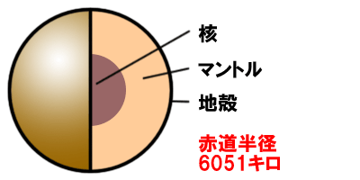
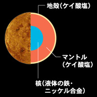
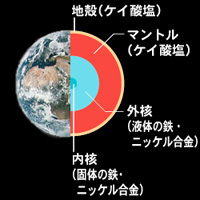
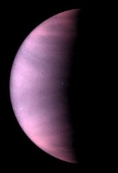

金星の特徴
金星は470℃と表面がとても高温である。大きさは地球よりも小さい。
恐竜が住んでると考えていた研究者もいましたが、金星には水がないためその考えは間違えだった。
火星には火山が多く点在している。また、大気は二酸化炭素:96.5％、窒素:3.5％、そのほか0.1％である。二酸化炭素は熱をためこむ性質、温室効果によって地表の温度が470℃にもなる。
逆方向の自転
金星は自転軸がほぼ完全に倒立しているため、他の惑星と逆方向に自転している。地球など金星以外の惑星では太陽が東から昇り西に沈むが、金星では太陽は西から昇って東に沈む。自転速度は極めて遅く、地球の自転周期を1日として金星は243日である。
地球にもっとも似ている惑星
金星は地球のすぐ内側を回る惑星で、地球に最も近づく惑星でもある。直径は地球の0.95倍、重さは地球の0.82倍と、大きさ・重さとも、地球とよく似ている。内部構造も地球とほぼ同じであると考えられている。地表から深さ約30kmまでケイ酸塩からなる地殻があり、その下にはケイ酸塩からなるマントルが広がっている。中心には金属の鉄・ニッケルからなる核がある。
スーパーローテーション
金星の大気の上層では、秒速100mもの風が吹いていて、金星をたったの100時間弱で1周してしまう。自転周期が非常に遅いのにもかかわらず、なぜこのような強風が吹いているのかは明らかになっていません。